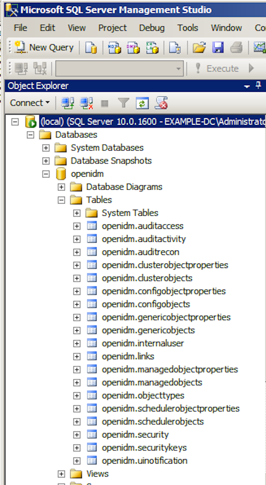

By default, OpenIDM uses OrientDB for its internal repository so that you do not have to install a database in order to evaluate OpenIDM. Before using OpenIDM in production, however, you must replace OrientDB with a supported JDBC repository.
OpenIDM 3.1.0 supports the use of MySQL, MS SQL, PostgreSQL, and Oracle Database as internal repositories. For details of the supported versions, see Before You Install OpenIDM Software in the Release Notes.
For information about the general JDBC repository configuration, and how to map OpenIDM objects to JDBC database tables, see Managing the OpenIDM Repository in the Integrator's Guide.
After you have installed MySQL on the local host and before starting OpenIDM for the first time, set up OpenIDM to use the new repository, as described in the following sections.
This procedure assumes that a password has already been set for the MySQL root user.
Download MySQL
Connector/J, version 5.1 or later from the MySQL website. Unpack the
delivery, and copy the .jar into the openidm/bundle
directory.
$ cp mysql-connector-java-version-bin.jar /path/to/openidm/bundle/
Make sure that OpenIDM is stopped.
$ cd /path/to/openidm/
$ ./shutdown.sh
OpenIDM is not running, not stopping.
Remove openidm/conf/repo.orientdb.json.
$ cd /path/to/openidm/conf/ $ rm repo.orientdb.json
Copy openidm/db/mysql/conf/repo.jdbc.json to the
openidm/conf directory.
$ cd /path/to/openidm $ cp db/mysql/conf/repo.jdbc.json conf/
Import the data definition language script for OpenIDM into MySQL.
$ cd /path/to/mysql $ ./bin/mysql -u root -p < /path/to/openidm/db/mysql/scripts/openidm.sql Enter password: $
This step creates an openidm database for use
as the internal repository, and a user openidm with
password openidm who has all the required privileges to
update the database.
$ ./bin/mysql -u root -p Enter password: Welcome to the MySQL monitor. Commands end with ; or \g. Your MySQL connection id is 18 Server version: 5.5.19 MySQL Community Server (GPL) ... mysql> use openidm; Reading table information for completion of table and column names You can turn off this feature to get a quicker startup with -A Database changed mysql> show tables; +---------------------------+ | Tables_in_openidm | +---------------------------+ | auditaccess | | auditactivity | | auditrecon | | clusterobjectproperties | | clusterobjects | | configobjectproperties | | configobjects | | genericobjectproperties | | genericobjects | | internaluser | | links | | managedobjectproperties | | managedobjects | | objecttypes | | schedulerobjectproperties | | schedulerobjects | | security | | securitykeys | | uinotification | +---------------------------+ 19 rows in set (0.00 sec)
The table names are similar to those used with OrientDB.
Update openidm/conf/repo.jdbc.json as necessary, to
reflect your MySQL deployment.
"connection" : {
"dbType" : "MYSQL",
"jndiName" : "",
"driverClass" : "com.mysql.jdbc.Driver",
"jdbcUrl" : "jdbc:mysql://localhost:3306/openidm",
"username" : "openidm",
"password" : "openidm",
"defaultCatalog" : "openidm",
"maxBatchSize" : 100,
"maxTxRetry" : 5,
"enableConnectionPool" : true,
"connectionTimeoutInMs" : 30000
},
When you have set up MySQL for use as the OpenIDM internal repository,
start OpenIDM to check that the setup has been successful. After startup,
you should see that repo.jdbc is
active, whereas repo.orientdb is
unsatisfied.
$ cd /path/to/openidm $ ./startup.sh Using OPENIDM_HOME: /path/to/openidm Using OPENIDM_OPTS: -Xmx1024m -Xms1024m Using LOGGING_CONFIG: -Djava.util.logging.config.file=/path/to/openidm/conf/logging.properties Using boot properties at /path/to/openidm/conf/boot/boot.properties -> scr list Id State Name [ 19] [active ] org.forgerock.openidm.config.starter [ 23] [active ] org.forgerock.openidm.taskscanner [ 8] [active ] org.forgerock.openidm.external.rest [ 12] [active ] org.forgerock.openidm.provisioner.openicf.connectorinfoprovider [ 15] [active ] org.forgerock.openidm.ui.simple [ 1] [active ] org.forgerock.openidm.router [ 22] [active ] org.forgerock.openidm.scheduler [ 14] [active ] org.forgerock.openidm.restlet [ 7] [unsatisfied ] org.forgerock.openidm.external.email [ 18] [unsatisfied ] org.forgerock.openidm.repo.orientdb [ 6] [active ] org.forgerock.openidm.sync [ 3] [active ] org.forgerock.openidm.script [ 5] [active ] org.forgerock.openidm.recon [ 2] [active ] org.forgerock.openidm.scope [ 10] [active ] org.forgerock.openidm.http.contextregistrator [ 20] [active ] org.forgerock.openidm.config [ 0] [active ] org.forgerock.openidm.audit [ 21] [active ] org.forgerock.openidm.schedule [ 17] [active ] org.forgerock.openidm.repo.jdbc [ 16] [active ] org.forgerock.openidm.workflow [ 13] [active ] org.forgerock.openidm.provisioner.openicf [ 4] [active ] org.forgerock.openidm.managed [ 9] [active ] org.forgerock.openidm.authentication [ 11] [active ] org.forgerock.openidm.provisioner
These instructions are specific to MS SQL Server 2008 running on a local Windows 2008 Server R2 system. Adapt the instructions for your environment.
When you install Microsoft SQL Server, note that OpenIDM has the following specific configuration requirements:
During the Feature Selection installation step, make sure that at least SQL Server Replication, Full Text Search, and Management Tools - Basic are selected.
These instructions require SQL Management Studio so make sure that you include Management Tools in the installation.
OpenIDM requires SQL Server authentication. During the MS SQL Server installation, make sure that you select SQL Server authentication (mixed mode) and not just Windows authentication.
TCP/IP must be enabled and configured for the correct IP address and port. To configure TCP/IP, follow these steps:
Click Start > All Programs > MS SQL Server 2008 R2 > Configuration Tools > SQL Server Configuration Manager.
Expand the SQL Server Network Configuration item and select "Protocols for MSSQLSERVER".
Double click TCP/IP and select Enabled > Yes.
Select the IP Addresses tab and set the addresses and ports on which the server will listen.
For this sample procedure, scroll down to IPAll and set TCP Dynamic Ports to 1433 (the default port for MS SQL).
Click Apply, then OK.
Restart MS SQL Server for the configuration changes to take effect. To restart the server, select SQL Server Services in the left pane, double click SQL Server (MSSQLSERVER) and click Restart.
If you have a firewall enabled, ensure that the port you configured in the previous step is open for OpenIDM to access MS SQL.
After you have installed MS SQL on the local host, install OpenIDM, if you have not already done so, but do not start the OpenIDM instance. Import the data definition and set up OpenIDM to use the new repository, as described in the following steps.
Use SQL Management Studio to import the data definition language script for OpenIDM into MS SQL.
Click Start > All Programs > Microsoft SQL Server 2008 > SQL Server Management Studio.
On the Connect to Server panel, under Server Type, select Database Engine. From the Authentication drop down list, select Windows Authentication. If needed, log in as the current user (for example, Administrator).
Select File > Open > File and navigate to the OpenIDM data definition
language script
(path\to\openidm\db\mssql\scripts\openidm.sql).
Click Open to open the file.
Click Execute to run the script.
This step creates an openidm database for use as the
internal repository, and a user openidm with password
Passw0rd who has all the required privileges to update
the database. You might need to refresh the view in SQL Server Management
Studio to see the openidm database in the Object
Explorer.
Expand Databases > openidm > Tables. You should see the OpenIDM tables in the openidm database, as shown in the following example:
|  |
The table names are similar to those used with OrientDB.
OpenIDM requires an MS SQL driver that must be created from two separate JAR files. Create the driver as follows.
Download the JDBC Driver 4.0 for SQL Server
(sqljdbc_4.0.2206.100_enu.exe) from
Microsoft's download site. The precise URL may vary, depending on
your location.
Run the downloaded executable file; it should extract multiple files, include Java archive files, to a dedicated folder.
Extract the executable Java archive file
(sqljdbc4.jar) from the dedicated folder, using
7-zip or an equivalent file management application.
Copy the Java archive file to
openidm\db\scripts\mssql.
Download the bnd Java archive file
(biz.aQute.bnd.jar) that enables you to create OSGi
bundles. The file can be downloaded from http://dl.dropbox.com/u/2590603/bnd/biz.aQute.bnd.jar.
For more information about bnd, see http://www.aqute.biz/Bnd/Bnd.
Copy the file to openidm\db\mssql\scripts.
Your openidm\db\mssql\scripts directory should now
contain the following files:
biz.aQute.bnd.jar openidm.sql sqljdbc4.bnd sqljdbc4.jar
Bundle the two JAR files together with the following command:
C:\> cd \path\to\openidm\db\mssql\scripts
./> java -jar biz.aQute.bnd.jar wrap -properties sqljdbc4.bnd sqljdbc4.jar
This step creates a single .bar file, named
sqljdbc4.bar.
Rename the sqljdbc4.bar file to
sqljdbc4-osgi.jar and copy it to the
openidm\bundle directory.
./> ren sqljdbc4.bar sqljdbc4-osgi.jar
./> copy sqljdbc4-osgi.jar \path\to\openidm\bundle
Remove the default OrientDB repository configuration file
(openidm\conf\repo.orientdb.json) from the
configuration directory.
C:\> cd \path\to\openidm\conf\
.\> del repo.orientdb.json
Copy the repository configuration file for MS SQL
(openidm\db\mssql\conf\repo.jdbc.json) to the
configuration directory.
C:\> cd \path\to\openidm
.\> cp db\mssql\conf\repo.jdbc.json conf\
Update openidm\conf\repo.jdbc.json as necessary, to
reflect your MS SQL deployment.
{
"connection" : {
"dbType" : "SQLSERVER",
"jndiName" : "",
"driverClass" : "com.microsoft.sqlserver.jdbc.SQLServerDriver",
"jdbcUrl" : "jdbc:sqlserver://localhost:1433;instanceName=default;
databaseName=openidm;applicationName=OpenIDM",
"username" : "openidm",
"password" : "Passw0rd",
"defaultCatalog" : "openidm",
"maxBatchSize" : 100,
"maxTxRetry" : 5,
"enableConnectionPool" : true,
"connectionTimeoutInMs" : 30000
},
...Specifically, check that the port matches what you have configured in MS SQL.
When you have completed the preceding steps, start OpenIDM to check that the
setup has been successful. After startup, you should see that
repo.jdbc is active, whereas
repo.orientdb is unsatisfied.
C:> cd \path\to\openidm ./> startup.bat "Using OPENIDM_HOME: \path\to\openidm" "Using OPENIDM_OPTS: -Xmx1024m -Xms1024m -Dfile.encoding=UTF-8" "Using LOGGING_CONFIG: -Djava.util.logging.config.file=\path\to\openidm\conf\logging.properties" Using boot properties at \path\to\openidm\conf\boot\boot.properties -> scr list Id State Name ... [ 18] [unsatisfied ] org.forgerock.openidm.repo.orientdb ... [ 17] [active ] org.forgerock.openidm.repo.jdbc ...
When implementing an Oracle database for OpenIDM, confer with an Oracle DBA when creating the database schema, tables, and users. This section assumes that you have configured an Oracle Database with Local Naming Parameters (tnsnames.ora) and a service user for use by OpenIDM.
Import the OpenIDM schema using the data definition language script
(/path/to/openidm/db/oracle/scripts/openidm.sql), as the
appropriate schema owner user.
If you have created OpenIDM tables correctly, you should be able to
query the internaluser table. The query should return two
records (openidm-admin and anonymous).
The output here has been formatted for legibility.
SQL> select * from internaluser; OBJECTID openidm-admin ----------------------------------------------------------------------------- REV 0 ----------------------------------------------------------------------------- PWD openidm-admin ----------------------------------------------------------------------------- ROLES openidm-admin,openidm-authorized ----------------------------------------------------------------------------- OBJECTID anonymous ----------------------------------------------------------------------------- REV 0 ----------------------------------------------------------------------------- PWD anonymous ----------------------------------------------------------------------------- ROLES openidm-reg -----------------------------------------------------------------------------
Before you start OpenIDM, create an Oracle DB driver from two separate jar files and set up the OpenIDM repository configuration for Oracle DB, as follows:
Download the Oracle JDBC driver for your Oracle DB version
from Oracle Technology Network and place it in the
openidm/db/oracle/scripts directory.
$ ls /path/to/openidm/db/oracle/scripts ojdbc6_g.jar openidm.sql
Create a bind file and edit it to match the version information for your JDBC driver.
You can use the sample bind file located in
openidm/db/mssql/scripts. Copy the bind file
to the same location as the JDBC driver.
$ cd /path/to/openidm/db $ cp mssql/scripts/sqljdbc4.bnd oracle/scripts $ ls oracle/scripts ojdbc6_g.jar openidm.sql sqljdbc4.bnd
The JDBC driver version information for your driver is located
in the Specification-Version property in the
MANIFEST file of the driver.
$ cd /path/to/openidm/db/oracle/scripts $ unzip -q -c ojdbc6_g.jar META-INF/MANIFEST.MF ... Specification-Vendor: Sun Microsystems Inc. Specification-Title: JDBC Specification-Version: 4.0 ...
Edit the bind file to match the JDBC driver version.
$ more sqljdbc4.bnd
...
version=4.0
Export-Package: *;version=${version}
Bundle-Name: Oracle JDBC Driver 4.0 for SQL Server
Bundle-SymbolicName: Oracle JDBC Driver 4.0 for SQL Server
Bundle-Version: ${version}
Download the bnd Java archive file
(biz.aQute.bnd.jar) that enables you to create
OSGi bundles. The file can be downloaded from
http://dl.dropbox.com/u/2590603/bnd/biz.aQute.bnd.jar.
For more information about bnd, see
http://www.aqute.biz/Bnd/Bnd.
Place the bnd Java archive file in the same
directory as the JDBC driver, and the bind file.
$ ls /path/to/openidm/db/oracle/scripts biz.aQute.bnd.jar ojdbc6_g.jar openidm.sql sqljdbc4.bnd
Change to the directory in which the script files are located and run the following command to create the OSGi bundle.
$ cd /path/to/openidm/db/oracle/scripts $ java -jar biz.aQute.bnd.jar wrap -properties sqljdbc4.bnd ojdbc6_g.jar Dec 10, 2013 9:53:28 AM java.util.prefs.FileSystemPreferences$1 run INFO: Created user preferences directory. ojdbc6_g 984 0
A new .bar file has now been created.
$ ls biz.aQute.bnd.jar ojdbc6_g.bar ojdbc6_g.jar openidm.sql sqljdbc4.bnd
Move the .bar file to the
openidm/bundle directory and rename it with a
.jar extension. The actual name of the file is
unimportant.
$ mv ojdbc6_g.bar /path/to/openidm/bundle/ojdbc6_g-osgi.jar
Remove the default OrientDB configuration file
(openidm/conf/repo.orientdb.json) from the
configuration directory.
$ rm /path/to/openidm/conf/repo.orientdb.json
Copy the OracleDB configuration file
(openidm/db/oracle/conf/repo.jdbc.json) to the
configuration directory.
$ cd /path/to/openidm $ cp db/oracle/conf/repo.jdbc.json conf/
Update openidm/conf/repo.jdbc.json as necessary,
to reflect your OracleDB deployment. Specifically, edit the
jdbcUrl,
username, and password properties. For
example:
"connection" : {
"dbType" : "ORACLE",
"jndiName" : "",
"driverClass" : "oracle.jdbc.OracleDriver",
"jdbcUrl" : "jdbc:oracle:thin:@//localhost:1521/openidm",
"username" : "openidm",
"password" : "password",
"defaultCatalog" : "openidm",
"maxBatchSize" : 100,
"maxTxRetry" : 5,
"connectionTimeoutInMs" : 30000
},The following parameters relate to the Oracle database:
The "dbType" is "ORACLE".
The "driverClass" is
"oracle.jdbc.OracleDriver".
The "jdbcUrl" corresponds to the URL of the Oracle DB
listener, including the service name, based on your configured Local Naming
Parameters (tnsnames.ora). It should be whatever is appropriate for your
environment. Replace "openidm" with the service name from your TNS
description.
The "username" and "password"
corresponds to the credentials of the service user that connects from
OpenIDM.
The "defaultCatalog" is used to generate queries
appropriate to your OpenIDM schema in Oracle. It should match the user who
"owns" the tables. If your schema owner was "openidm",
then the "defaultCatalog" should also be
"openidm". This will cause OpenIDM to generate queries
such as "SELECT objectid FROM openidm.internaluser".
When you have set up OracleDB for use as the OpenIDM internal repository, start OpenIDM to check that the setup has been successful. On startup, a number of INFO messages are output, as the predefined queries are processed.
After startup, you should see that repo.jdbc is
active, whereas repo.orientdb is
unsatisfied.
$ cd /path/to/openidm $ ./startup.sh Using OPENIDM_HOME: /path/to/openidm Using OPENIDM_OPTS: -Xmx1024m -Xms1024m Using LOGGING_CONFIG: -Djava.util.logging.config.file=/path/to/openidm/conf/logging.properties Using boot properties at /path/to/openidm/conf/boot/boot.properties .... -> scr list Id State Name ... [ 2] [unsatisfied ] org.forgerock.openidm.repo.orientdb ... [ 3] [active ] org.forgerock.openidm.repo.jdbc ...
The use of PostgreSQL as a repository is supported for Java 1.7 only.
This procedure assumes that PostgreSQL (version 9.3 or later) is installed and running on the local host.
Before starting OpenIDM for the first time, set up OpenIDM to use a PostgreSQL repository, as described in the following procedure.
OpenIDM includes a script
(path/to/openidm/db/postgresql/scripts/createuser.pgsql)
that sets up an openidm database and user, with a
default password of openidm. The script also grants the
appropriate permissions.
Edit this script if you want to change the password of the
openidm user, for example:
$ more /path/to/openidm/db/postgresql/scripts/createuser.pgsql create user openidm with password 'mypassword'; create database openidm encoding 'utf8' owner openidm; grant all privileges on database openidm to openidm;
Execute the createuser.pgsql script as follows:
$ psql < /path/to/openidm/db/postgresql/scripts/createuser.pgsql CREATE ROLE CREATE DATABASE GRANT
Execute the openidm.pgsql script as the new
openidm user that you created in the first step.
$ psql -U openidm < /path/to/openidm/db/postgresql/scripts/openidm.pgsql CREATE SCHEMA CREATE TABLE CREATE TABLE CREATE TABLE CREATE INDEX CREATE INDEX ... START TRANSACTION INSERT 0 1 INSERT 0 1 COMMIT CREATE INDEX CREATE INDEX
Your database has now been initialized.
Remove the OrientDB repository configuration file from the OpenIDM
configuration directory (conf/repo.orientdb.json).
$ rm /path/to/openidm/conf/repo.orientdb.json
Copy the PostgreSQL repository configuration file
(openidm/db/postgres/conf/repo.jdbc.json) to the
configuration directory.
$ cd /path/to/openidm $ cp db/postgres/conf/repo.jdbc.json conf/
If you changed the password in step 1 of this procedure, edit the
repo.jdbc.json file to set the value for the
"password" field to whatever password you set for the
openidm user. For example:
$ more conf/repo.jdbc.json
{
"connection" : {
"dbType" : "POSTGRESQL",
"jndiName" : "",
"driverClass" : "org.postgresql.Driver",
"jdbcUrl" : "jdbc:postgresql://localhost:5432/openidm",
"username" : "openidm",
"password" : "mypassword",
...}PostgreSQL is now set up for use as the OpenIDM internal repository.
Start OpenIDM to check that the setup has been successful. After startup,
you should see that repo.jdbc is
active, whereas repo.orientdb is
unsatisfied.
-> OpenIDM ready scr list Id State Name ... [ 4] [unsatisfied ] org.forgerock.openidm.repo.orientdb ... [ 3] [active ] org.forgerock.openidm.repo.jdbc ... ->
If you are using the default project configuration, run the
default_schema_optimization.pgsql script to create the
required indexes. The file includes extensive comments on the indexes
that are being created.
$ psql -U openidm < /path/to/openidm/db/postgresql/scripts/default_schema_optimization.pgsql CREATE INDEX CREATE INDEX CREATE INDEX CREATE INDEX CREATE INDEX CREATE INDEX